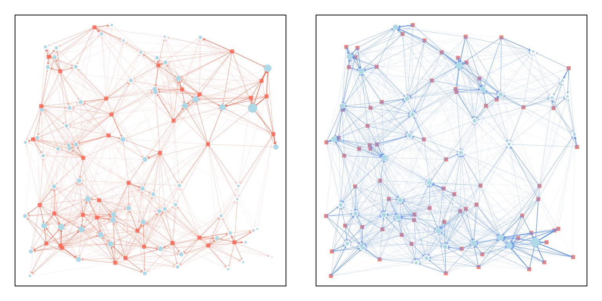
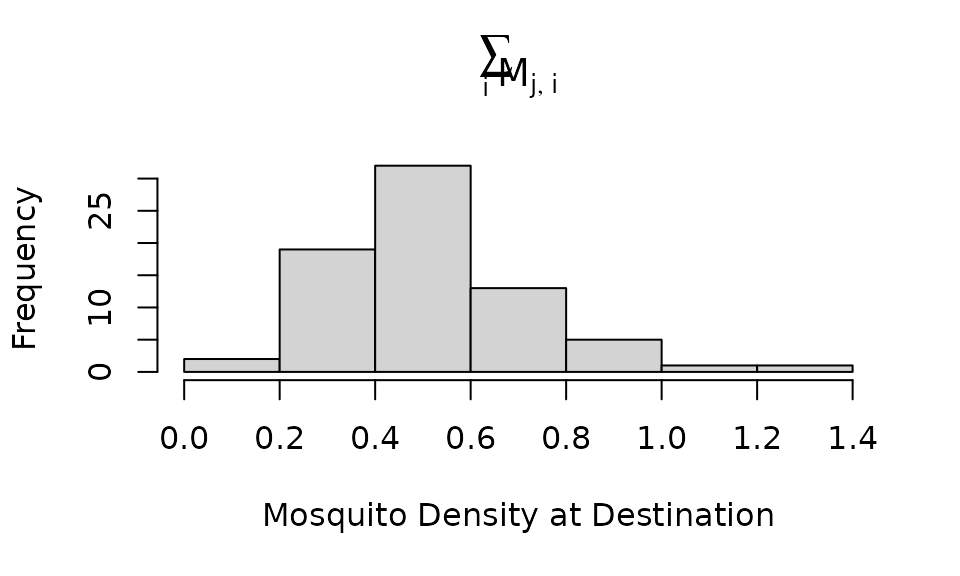
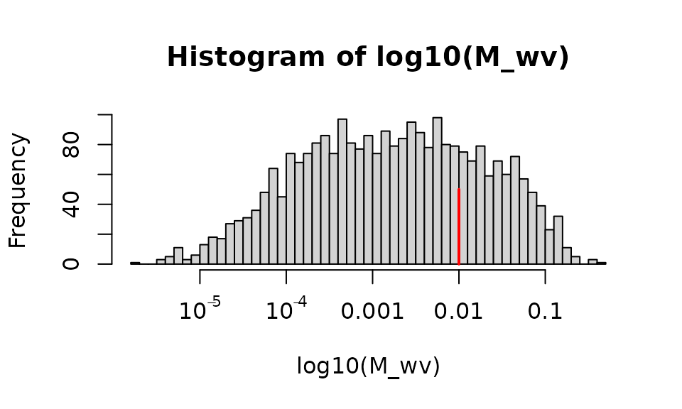
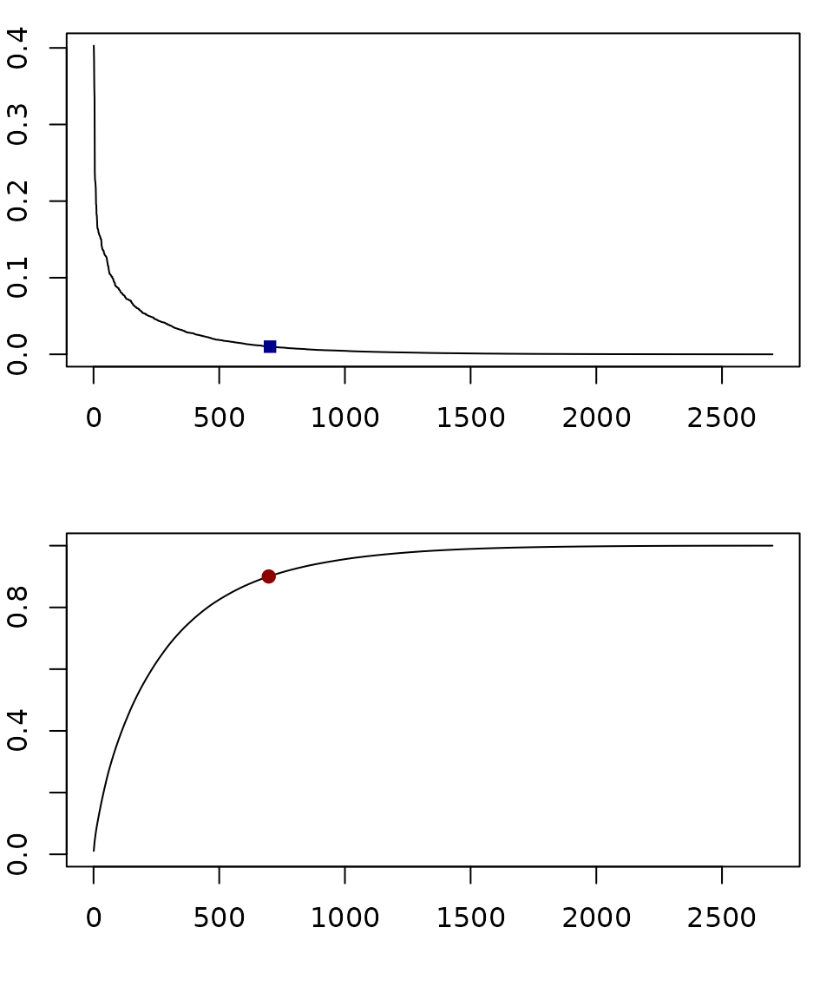

Visualizing Micro-Dispersal
visualizing_dispersal.RmdIntroduction
In behavioral state micro-simulation, mosquito movement is defined by a search for a resource, and all resources are located at points in space, Micro-dispersal is defined herein as dispersal among point sets representing the locations of resources.
Micro-dispersal models in this software implementation follow a common notation:
A search originates in one point set, , with locations; and the destination is another, with locations.
A dispersal model is instantiated as a matrix where the element is the fraction of mosquitoes moving from to .
-
If we had a vector, , of mosquito abundances at the origin of a search, and if we want to compute a vector, , describing the number arriving at a destination, then we write where
and
so
By convention, we constrain model so that,
If we want to model failed dispersal, then we will often want to handle the case where the origin and destination are the same point set.
In the following, we discuss the challenge of visualizing
micro-dispersal matrices using functions in motrap.micro
where either
or where
Dispersal from
To illustrate, we generate two point sets:
Now, we can define a dispersal matrix from to , and vice versa:
M_wv = make_Psi_xy(Pv, Pw, make_kF_exp())
M_vw = make_Psi_xy(Pw, Pv, make_kF_exp())The generic function plot_matrix_xy was developed to
plot dispersal from
to

Movement
Because of the arrangement of points, some points in get more mosquitoes. If an equal number of mosquitoes left every point in , the number arriving at each point in can be found by summing the rows of the dispersal matrix, :
hist(rowSums(M_wv), xlab = "Mosquito Density at Destination", main = expression(sum(M[list(j,i)], i)))
The matrix
has
nPvnPw
elements, for a total of
.
This is a reasonably small number of points to consider, but what if we
increased the number of points in each set by a factor of 10 or 100? The
size of the objects can grow quite large quite quickly.
We assume that mosquitoes are more likely to move to nearby sites. The fraction going to each site is highly uneven. The model computes a probability of moving between each pair of points, but most of the elements fractions are very small.
hist(log10(M_wv), 40, xaxt = "n")
axis(1, -5:-1, c(expression(10^-5), expression(10^-4), "0.001", "0.01", "0.1"))
segments(-2, 0, -2, 50, col = "red", lwd=2)
In the following, we draw an arrow from the points in the starting set (, salmon) to the points in the destination set (, lightblue). On the left, all the edges were plotted, but on the right, edges were plotted only if the destination got more than 1% of the dispersing mosquitoes. We vary the size of the destination point to be the density of mosquitoes arriving:

In the top, we plot all the dispersal fractions for all the points in order, and we added a dark blue dot at the point where we stopped plotting.
Another way to set a cutoff is to compute the empirical cdf (the cumulati e sum of the top graph) and plot 90% of the total mass (the dark red dot in the bottom).
par(mfrow = c(2,1), mar = c(4,2,1,1))
ot = order(as.vector(M_wv), decreasing=T)
Mo = as.vector(M_wv)[ot]
plot(Mo, type = "l", ylab = "PMF", xlab = "")
ix1 = max(which(Mo>0.01))
points(ix1, Mo[ix1], pch = 15, col = "darkblue")
ecdf = cumsum(Mo)/sum(M_wv)
plot(ecdf, type = "l", ylim = c(0,1), xlab = "", ylab = "eCMF")
ix2 = min(which(ecdf >0.9))
points(ix2, ecdf[ix2], pch=19, col = "darkred")
Plot Size
We can now ask a practical question – how many edges would we plot if the system was much larger:
nEdges = function(nS, nD, frac=0.01){
dd = 10
S = unif_xy(nS,-dd, dd)
D = unif_xy(nD,-dd, dd)
M = make_Psi_xy(S, D, make_kF_exp())
ot = order(as.vector(M), decreasing=T)
Mo = as.vector(M)[ot]
ix1 = max(which(Mo>frac))
c(ix1, nS*nD, ix1/nS/nD)
}If we generated 20 models that were statistically indistinguishable from the one above, we can compute the average number of edges plotted, and the average fraction of edges showing.
## nEdges
## 385.05## fracEdges
## 0.3316537If we start with ten times as many source and destination point, we end up plotting about 20 times as many points:
## nEdges
## 7709.45## fracEdges
## 0.06640353The plot is much busier to look at, but it renders in a reasonable amount of time:
This code was not run because it creates and stores an object that is bigger than we wanted to store on github. Try running this code on your computer and see what happens?
nPv = 270
nPw = 430
dd=10
Pv = unif_xy(nPv,-dd, dd)
Pw = unif_xy(nPw,-dd, dd)
M = make_Psi_xy(Pv, Pw, make_kF_exp())
plot_matrix_xy(Pv, Pw, M, min_edge_frac = 0.02) If we plotted 50 times as many of each, now something suprising happens:
## nEdges
## 2434.3## fracEdges
## 0.0008386908We end up plotting fewer edges. What’s happening?
This code was not run because it creates and stores an object that is bigger than we wanted to store on github. Try running this code on your computer and see what happens?
nPv = 270*5
nPw = 430*5
dd=10
Pv = unif_xy(nPv,-dd, dd)
Pw = unif_xy(nPw,-dd, dd)
M = make_Psi_xy(Pv, Pw, make_kF_exp())
plot_matrix_xy(Pv, Pw, M, min_edge_frac = 0.01) The visualization is emphasizing the weights of points in the corner, which have fewer neighbors than points near the center. The result is a figure that illustrates both the importance of being able to visualize a model, and the importance of understanding how this approach highlights real and serious questions about mosquito dispersal – what happens at the edges of habitats?